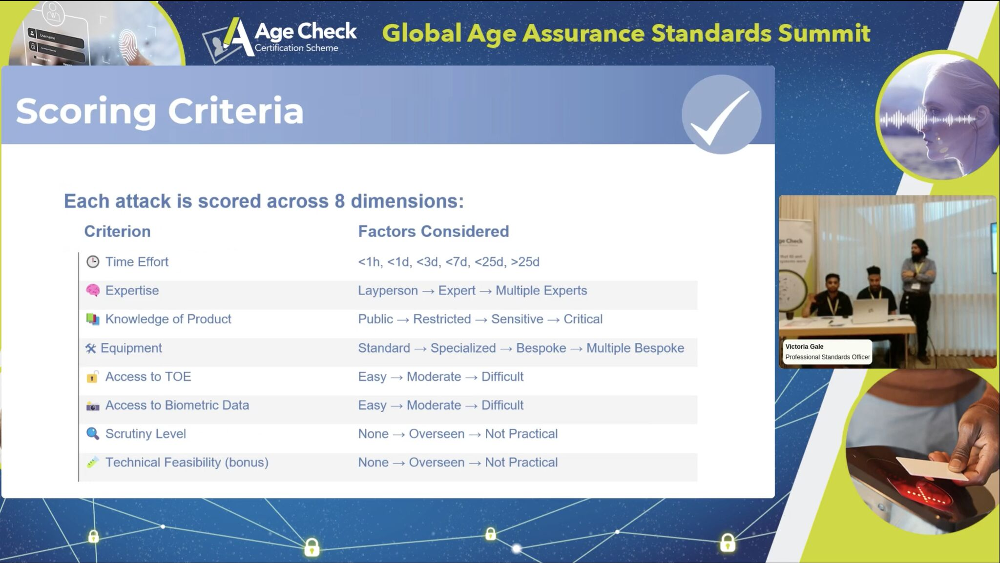

Synthetic media — AI-generated images, video, and audio designed to impersonate real people — is advancing faster than the tools organisations use to detect it. For companies handling biometric identity data, this creates a direct and growing fraud risk: deepfakes can defeat face-matching systems, spoof liveness checks, and bypass age verification.
This UKRI-backed research project was designed to understand the real-world attack surface, build detection infrastructure at scale, and translate findings into practical guidance for organisations operating in regulated environments.
A key output of this research was a rigorous attack-scoring methodology, presented at the Global Age Assurance Standards Summit. Each attack vector was evaluated across 8 dimensions to produce a standardised risk score — making it possible to compare and prioritise threats objectively.
I led the data infrastructure for this project, designing and building a scalable PySpark architecture on AWS to process over 200,000 facial image records. Handling biometric data across UK and Swiss jurisdictions required strict GDPR-equivalent compliance procedures, which I designed and maintained throughout the project.
Beyond the engineering work, I delivered three technical workshops to over 150 professionals — covering AI attack patterns, detection strategies, and practical risk mitigation for organisations operating biometric identity systems. Translating research into practitioner-facing guidance was a core part of the project's impact mandate.
Any organisation that uses facial recognition, liveness detection, or biometric identity verification is exposed to deepfake risk. This research directly addresses that exposure — from building the detection infrastructure to understanding which attack vectors are most realistic for your threat model.
This work is particularly relevant to digital identity providers, financial services firms, age verification platforms, and government bodies dealing with AI safety and fraud prevention. If you need an analyst who understands both the technical and regulatory dimensions of biometric AI risk, this project is the clearest demonstration of that.